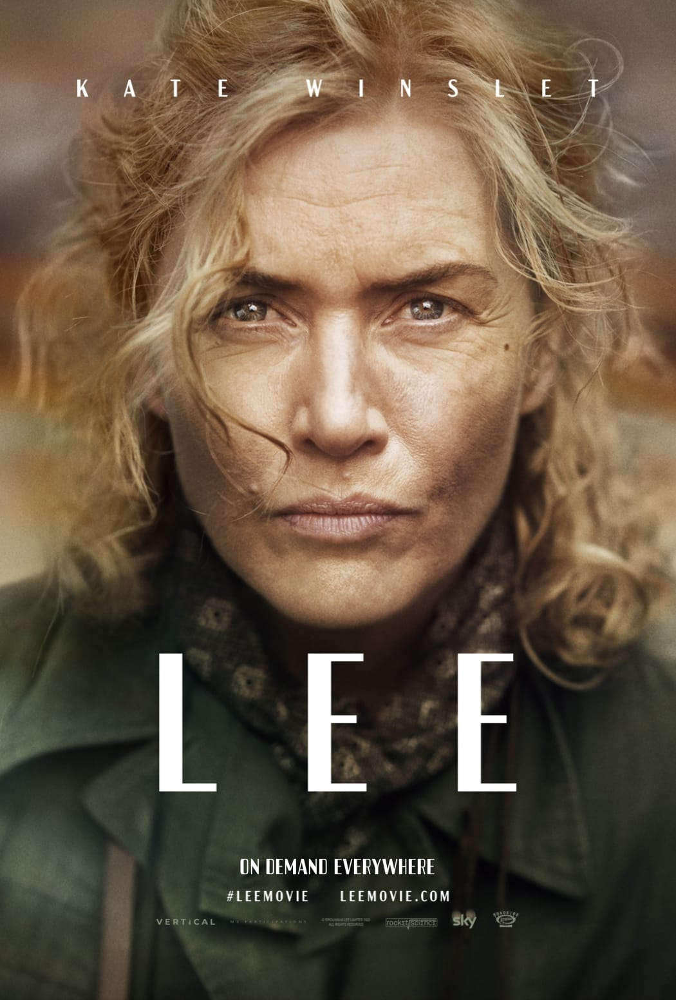

Back to Timeline
Lee (2023)
About the Film
Lee, directed by Ellen Kuras, remembers Lee Miller, 20th century photojournalist and model, as portrayed by Kate Winslet. In a fictional interview set in 1977, Lee recalls her experiences as a photographer for Vogue magazine during WWII. Lee reminisces on her life prior to the war and her subsequent move to England after meeting her partner, Roland Penrose. As the war progresses across Europe and England is eventually pulled in, Lee progressively becomes more involved through her photography. Initially used to promote protective gear and other war efforts through Vogue, Lee ultimately pushes her way to the war front in France and finally Germany.
Historical Context
- Movie begins in 1937, spans across WWII, and also takes place in 1977.
- Lee began as a model in 1927 but later got into photography and eventually photojournalism.
- During WWII, Lee becomes a war correspondent for Vogue.
- Lee wants to be more involved in the war effort but initially faces obstacles from the English government going to the action because she is a woman. She was eventually able to go to the front lines when the US joined WWII in 1941, allowing Lee to become a war correspondent after being denied by England. At that time photojournalism was a male-dominated field, which highlights the sexism at that time.
- While photographing the war with colleague David (Davy) Scherman, Lee captured many famous photos of the horrors of WWII.
- One of her most famous photos was of the devastation of the concentration camps, where she captured pictures of the survivors and the terrors that were in the camps. This allowed the viewers to see how awful the concentration camps were and the horrible conditions that real people had to suffer through.
- The film also touches upon the effects that experiencing the war had on Lee. Her husband later discusses that she likely struggled with PTSD and other mental health disorders. At that time, there was not a lot of knowledge about mental health disorders.
- This film did not really glorify photojournalism, but it did show the audience how important it is.
- Lee highlights how people need to know what is happening whether they like it or not, and this movie does a great job at portraying that message.
- Film was initially inspired by Kate Winslet buying a table that had been previously owned by Lee’s sister-in-law and did a deep dive into Lee.
- The US joins WWII in 1941, allowing Lee to become a war correspondent for the US after being denied by England.
- Film production for the film took over eight years due to financial difficulties.
Themes of the Film
- Sexism - Lee faced many obstacles when trying to work on the front lines to capture the war because she was a woman.
- Photojournalism - Lee showed how photojournalism is vital in informing the people of what is happening in the world.
- Cost/effects of war - the audience learned about the mental health effects of war, as well as how deadly and violent war is.
- Family - Lee is surrounded by family throughout the film - including her close friends, partner, and son. She is greatly impacted by their presence and absence as the war takes its toll.
- WWII - Set primarily during WWII, Lee’s life and photography, as well as all other characters, are heavily impacted and shaped by the ravaging war they are surrounded by. The film also takes place in 1977, in an interview by her son, who learns about his mother's experiences from her photographs.
Related Film: His Girl Friday
- Lee and His Girl Friday both feature a strong-willed female lead that stands out in a male-dominated field.
- His Girl Friday was released in 1940 - the same period that Lee takes place in.
- Chasing after their stories, Hildy and Lee are both very active in pursuing information.
- Both Hildy and Lee set aside their partners for the sake of going out and obtaining their stories.
Contrasting Film: Nightcrawler
- Although both Lee and Nightcrawler focus on photojournalism, the ways in which these forms of journalism are portrayed and used within the films are starkly different.
- Lee highlights how capturing the atrocities of the war were so important to inform people and raise awareness to certain issues.
- In Nightcrawler, Lou Bloom obsessively tries to capture the most gory and disgusting videos in order to make money.
- Lou in Nightcrawler manipulates scenes that he wants to capture to get the most intriguing shots.
- Unlike Lou, who almost seems in awe of the horrors he films, Lee is deeply moved by what she captures and only cares about showing people the truth.
- Lee shows photojournalism in a positive light, important for showing the world's harsh realities with hopes to foster change for the better.
- Nightcrawler highlights the corruption within the news/journalism world and critiques the exploitation of suffering to gain profit.
- Lou selectively captures events, whereas Lee goes where the war takes her and captures what she can.